GetMetaDataDesign case study · 10 min read
An SEO panel you can read at a glance.
I compared GetMetaData, a Chrome extension that lists the details search engines read on a web page, with three rival tools, then redesigned its panel so the data is easier to find and read.
- Role
- Competitive review, information structure, wireframes and interface design
- Team
- Solo
- Timeline
- 2021–22
- For
- A design assignment set by a company
- Platform
- Chrome extension
- Methods
- Review of four tools on one test page, a positioning map, two personas, paper wireframes, a Figma prototype
- Status
- Design prototype. Not tested with users, and no built version to show
In short
- The problem: GetMetaData shows a lot of useful SEO data, but in very small text with no clear grouping. It is hard to see what needs attention.
- What I did: I reviewed it beside three competing extensions on the same web page, sketched a new layout on paper, and designed a prototype with a side menu of eight sections.
- The key idea: keep the depth and the export, and give the data a reading order. A separate bug that shows the data twice needs a code fix, so I kept it out of the design work.
- Where it stands: my deck shows two finished screens, Overview and Headings, and there is a Figma prototype. It has not been tested with users.
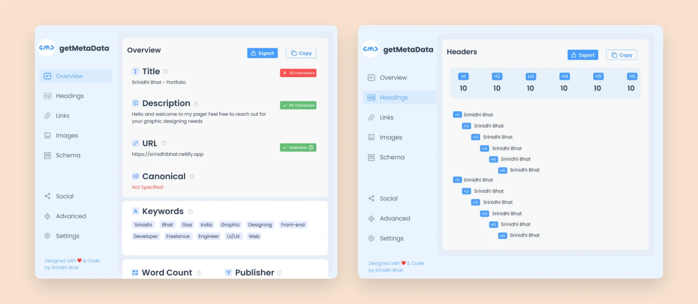
01 The problem
Useful data, in text too small to read
SEO is short for search engine optimisation: the work of helping a web page show up in search results. Much of it comes down to details most visitors never see, such as the page title, its description, its headings, the text behind its images and its links.
GetMetaData is a Chrome extension that pulls those details out of a page and lists them. The brief was to design an interface for it that helps people extract and analyse five kinds of data: meta tags, header tags, image tags, structured data and links.
When I used the extension, the data was all there. Reading it was the hard part. The text was very small, the information was poorly organised, and the look was dated.
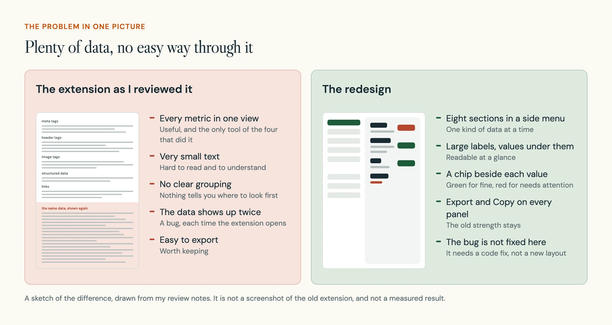
02 Competitive review
I ran four tools on the same page
Before drawing anything, I wanted to know what good looked like. I picked three other SEO extensions and ran each of them, and GetMetaData itself, on one page: my own portfolio site. With the page held steady, the differences I saw came from the tools.
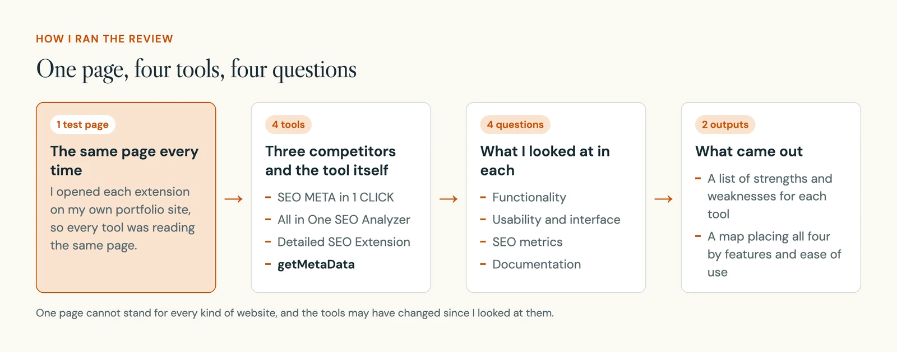
For each tool I wrote down what it did well and where it fell short.
- 4
- tools reviewed, three competitors and GetMetaData
- 1
- test page shared by all four
- 23
- strengths written down
- 11
- weaknesses written down
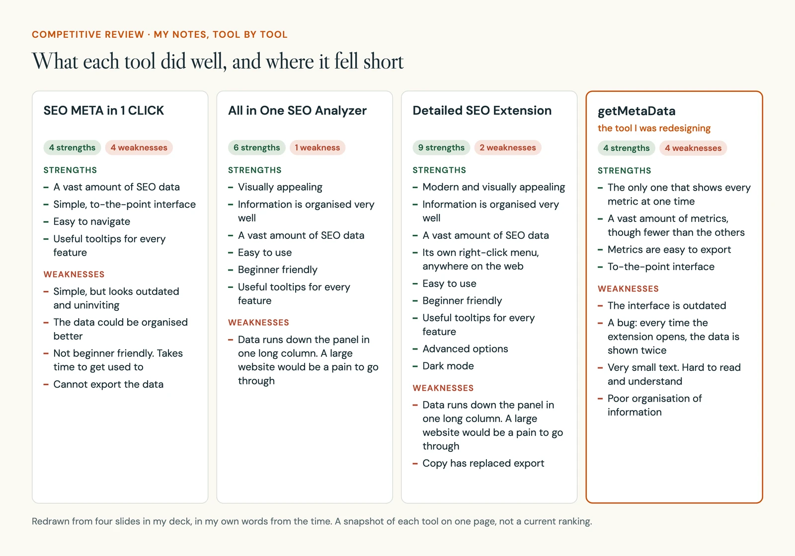
Lists like these are hard to compare by eye. So I sorted the same notes by question.
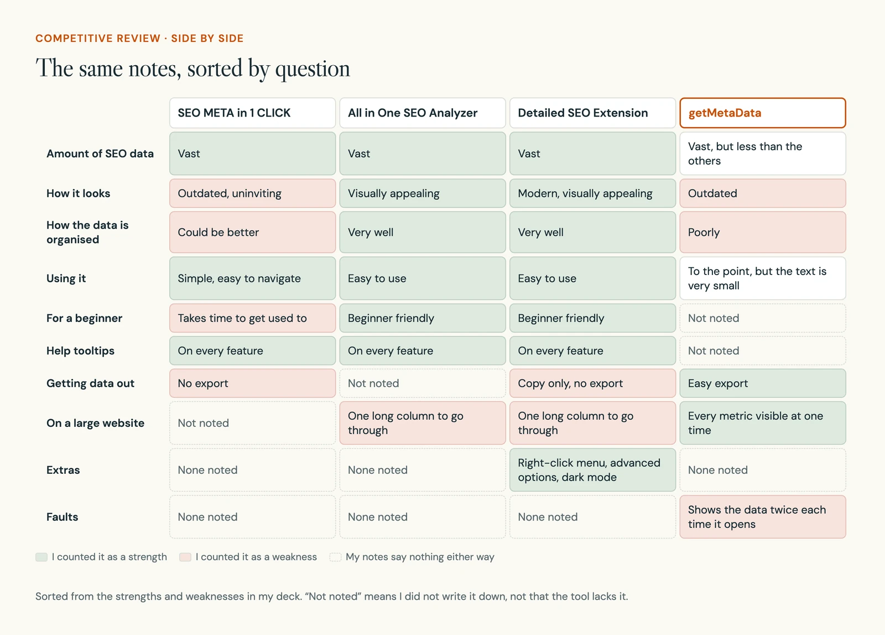
- All three competitors had help tooltips on every feature. I counted that as a strength each time.
- Two of them ran their data down one long column, which I expected to be a pain on a large website.
- GetMetaData was the only one that showed every metric at one time, and it exported easily. One competitor could not export at all. Another had swapped export for copy.
03 Where it stood
The others had more features and were easier to use
I then placed all four tools on a simple map. Left to right is how many features a tool has. Bottom to top is how good it is to use.
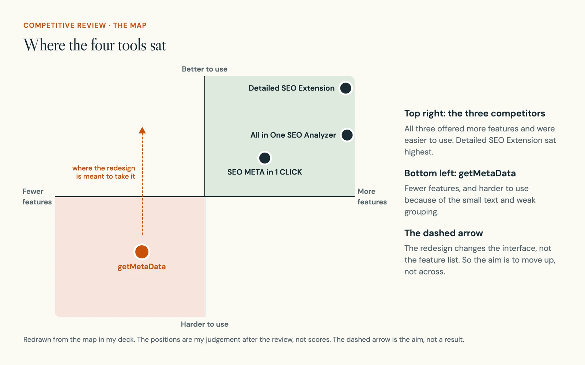
My brief was the interface, not the feature list. So the goal was to move the tool up the map, and to keep its easy export on the way.
04 Who it is for
An expert and a beginner read the same panel
An SEO tool has two very different kinds of reader. One does this for a living. The other runs a business and wants the website to be found. To keep both in mind I wrote two personas, made-up people who each stand for a type of user.
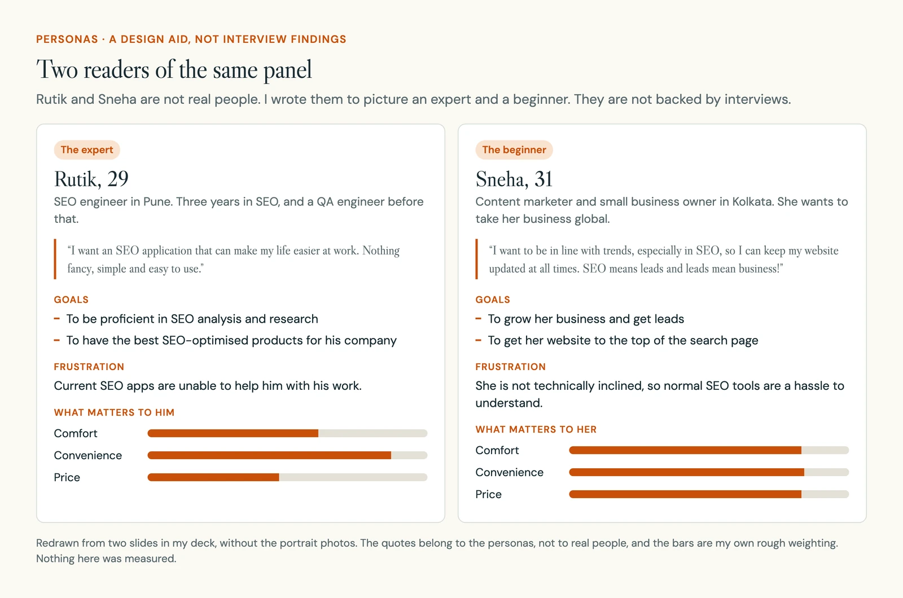
05 From review to design
Each change traces back to a finding
I went through the weaknesses one at a time and asked what the interface could do about each. I also kept an eye on the strengths, in the competitors and in GetMetaData, so the redesign would not throw away something that worked.
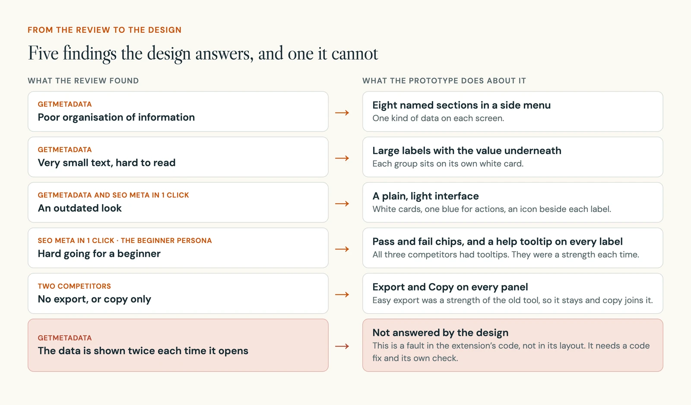
06 Structure
Eight sections in one side menu
The side menu has eight sections. Five of them match the five kinds of data in the brief. Social, Advanced and Settings are additions.
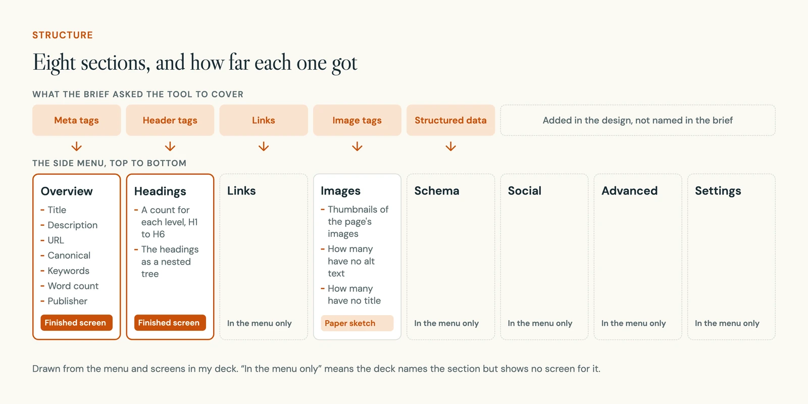
My deck shows two of these as finished screens, Overview and Headings, and a third, Images, as a paper sketch.
07 Sketches
Three screens on paper first
I started on paper. A wireframe is a rough sketch of a screen that shows where things go, without colour or detail. I drew three: the overview, the headings and the images.
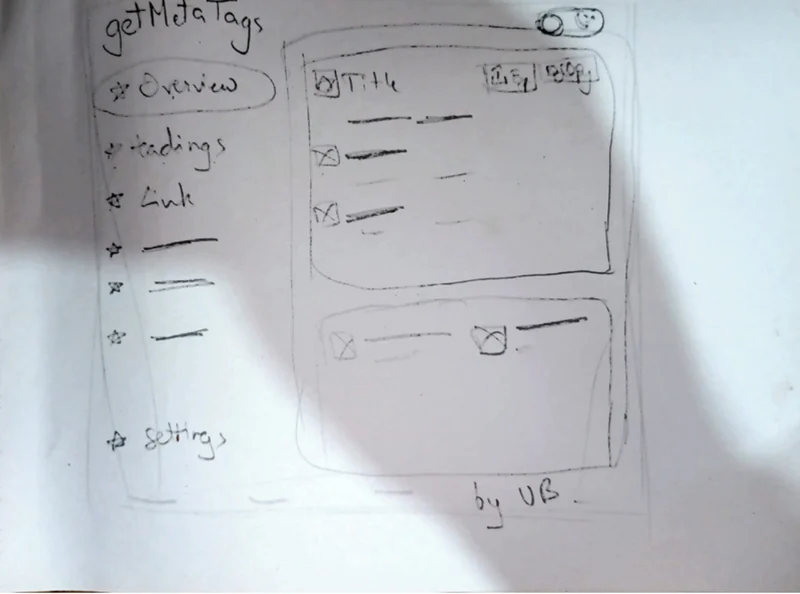
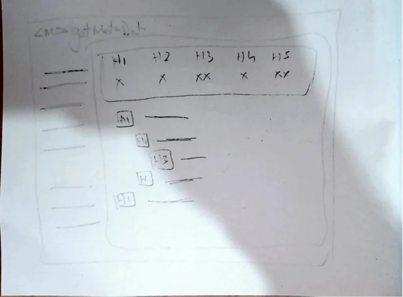
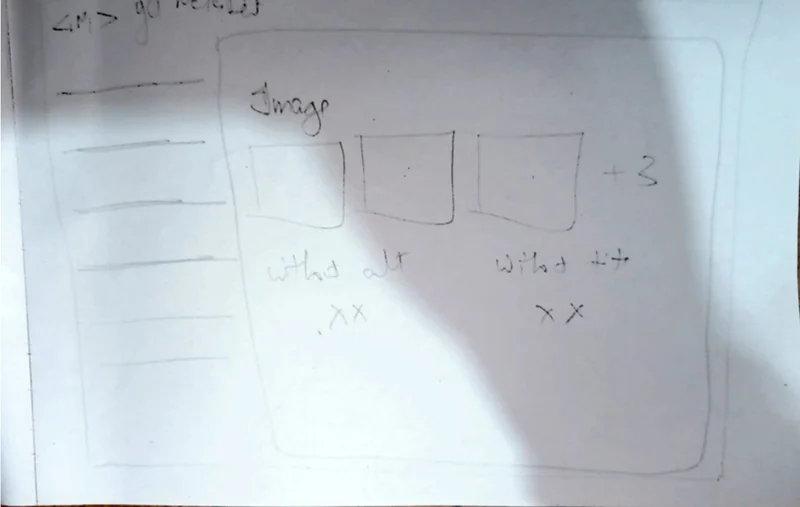
The pencil is faint in the photos, so here are the same three sketches traced cleanly.
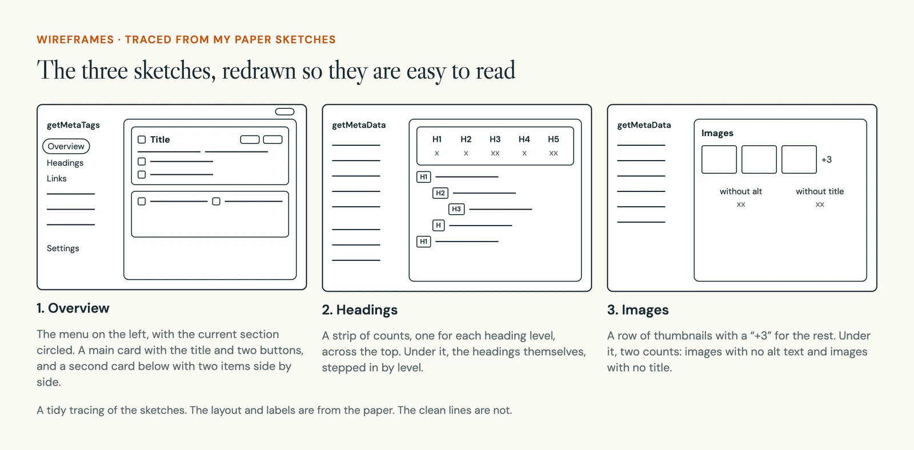
A few things changed between paper and screen. The first sketch is headed getMetaTags, and the finished screens say getMetaData. The sketched count strip stops at H5, and the finished one runs to H6. The first sketch also has a switch in the top corner that the finished Overview does not.
08 The design
The basics of a page, each with a verdict
The Overview is the first screen. It lists the page's title, description, address and canonical link, which is the address a page names as its official one. Below those come the keywords, the word count and the publisher.
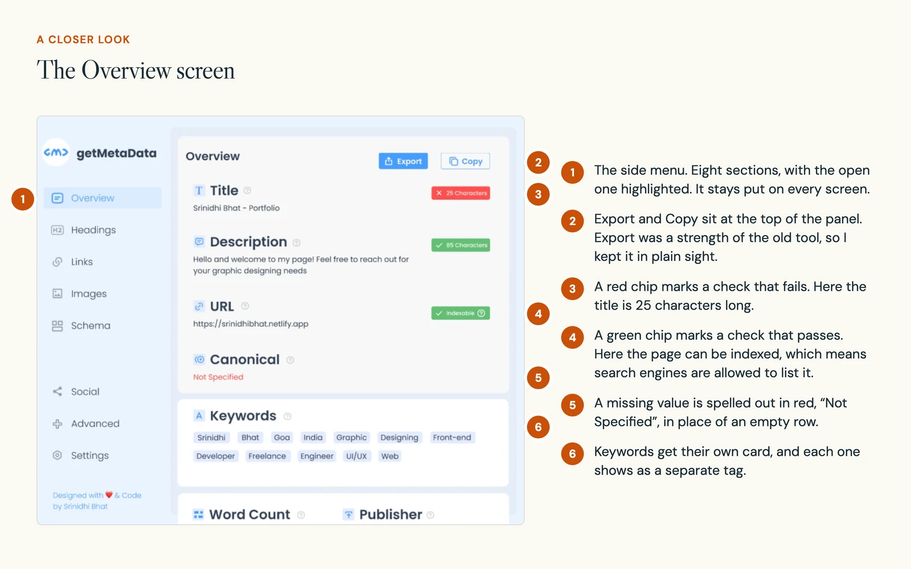
The chip on the right of each row carries the main idea. Someone who knows SEO can run an eye down the chips and stop at the red one. Someone who does not gets a plain signal that a row needs attention before reading any detail.
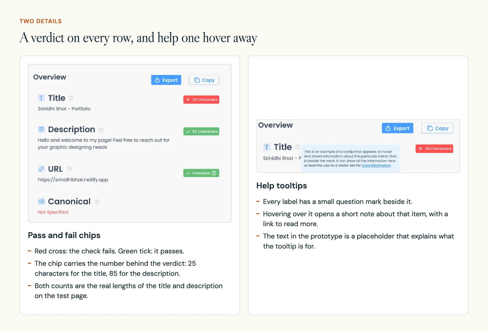
The tooltips come straight from the review. All three competitors had them, and for a reader like Sneha they are where a word like "canonical" gets explained.
09 The design
Headings shown the way they nest
Headings are the titles and subtitles inside a page. They are numbered from H1, the main title, down to H6. This screen answers two questions about them: how many of each level does the page have, and how do they sit under one another?
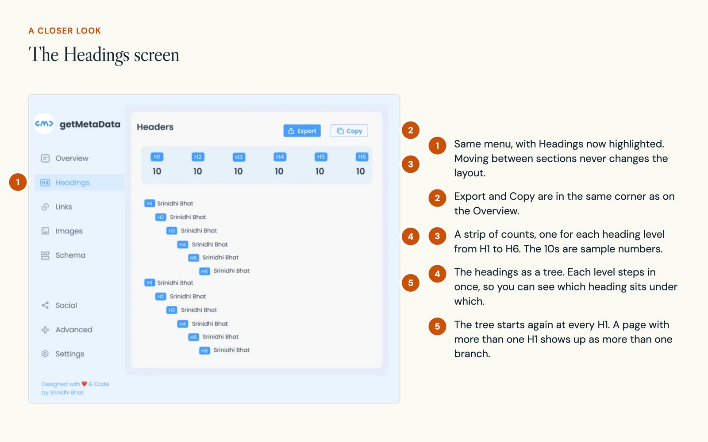
10 What comes next
What I would do before calling it done
The prototype shows how the panel could look and read. It does not show that people find things faster with it. That needs a test, and a few other things need doing first.
- Fix the bug on its own terms.The extension should show its data once. I would check that separately, with its own pass or fail, before judging the new layout.
- Test real tasks with both kinds of reader.Ask someone new to SEO and someone experienced to find a missing description, check the image descriptions and export what they found.
- Try awkward pages.Use pages with very long values, missing values and a great many headings, and see where the layout breaks.
- Bring every section to the same level.My deck shows Overview and Headings finished and Images as a sketch. All eight sections need the same care.
- Tidy one label.The menu says Headings and the panel title says Headers. I would use one word in both places.
11 What I learned
Easier to read is not the same as correct
The most useful thing I did here was keep two problems apart. One was how the data is laid out. The other was whether the data is right. A cleaner panel that still showed everything twice would look better and be just as wrong.
The review also taught me to look for what a weak tool does well. GetMetaData sat lowest on my map, yet it was the only one of the four that showed every metric at once, and it exported easily. Export stayed in the redesign because of that.
If I did it again, I would talk to a few real users before writing the personas.
Let the work lead the portfolio.